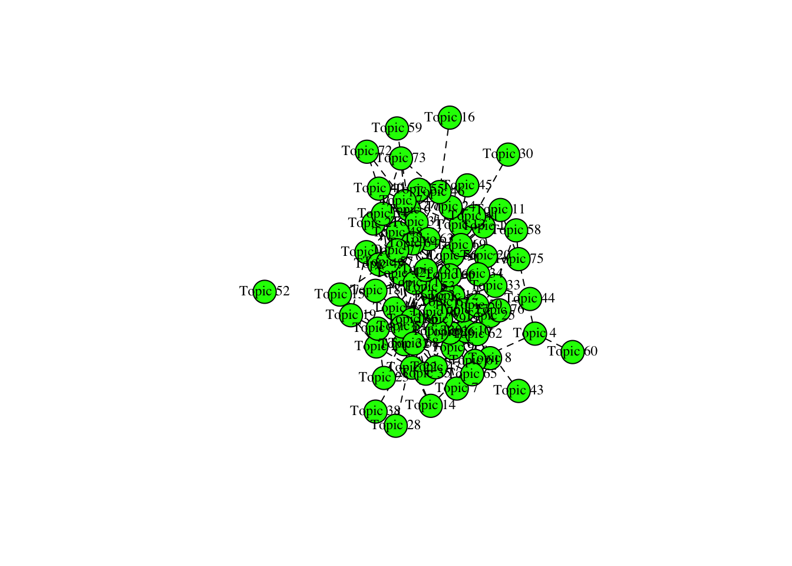

Last updated: 2023-12-20
Checks: 7 0
Knit directory:
workflowr-policy-landscape/
This reproducible R Markdown analysis was created with workflowr (version 1.7.1). The Checks tab describes the reproducibility checks that were applied when the results were created. The Past versions tab lists the development history.
Great! Since the R Markdown file has been committed to the Git repository, you know the exact version of the code that produced these results.
Great job! The global environment was empty. Objects defined in the global environment can affect the analysis in your R Markdown file in unknown ways. For reproduciblity it’s best to always run the code in an empty environment.
The command set.seed(20220505) was run prior to running
the code in the R Markdown file. Setting a seed ensures that any results
that rely on randomness, e.g. subsampling or permutations, are
reproducible.
Great job! Recording the operating system, R version, and package versions is critical for reproducibility.
Nice! There were no cached chunks for this analysis, so you can be confident that you successfully produced the results during this run.
Great job! Using relative paths to the files within your workflowr project makes it easier to run your code on other machines.
Great! You are using Git for version control. Tracking code development and connecting the code version to the results is critical for reproducibility.
The results in this page were generated with repository version a30bb03. See the Past versions tab to see a history of the changes made to the R Markdown and HTML files.
Note that you need to be careful to ensure that all relevant files for
the analysis have been committed to Git prior to generating the results
(you can use wflow_publish or
wflow_git_commit). workflowr only checks the R Markdown
file, but you know if there are other scripts or data files that it
depends on. Below is the status of the Git repository when the results
were generated:
Ignored files:
Ignored: .DS_Store
Ignored: .RData
Ignored: .Rhistory
Ignored: .Rproj.user/
Ignored: data/.DS_Store
Ignored: data/original_dataset_reproducibility_check/.DS_Store
Ignored: output/.DS_Store
Ignored: output/Figure_3B/.DS_Store
Ignored: output/created_datasets/.DS_Store
Untracked files:
Untracked: gutenbergr_0.2.3.tar.gz
Unstaged changes:
Modified: Policy_landscape_workflowr.R
Modified: data/original_dataset_reproducibility_check/original_cleaned_data.csv
Modified: data/original_dataset_reproducibility_check/original_dataset_words_stm_5topics.csv
Modified: output/Figure_3A/Figure_3A.png
Modified: output/created_datasets/cleaned_data.csv
Note that any generated files, e.g. HTML, png, CSS, etc., are not included in this status report because it is ok for generated content to have uncommitted changes.
These are the previous versions of the repository in which changes were
made to the R Markdown (analysis/2_Topic_modeling.Rmd) and
HTML (docs/2_Topic_modeling.html) files. If you’ve
configured a remote Git repository (see ?wflow_git_remote),
click on the hyperlinks in the table below to view the files as they
were in that past version.
| File | Version | Author | Date | Message |
|---|---|---|---|---|
| html | 5c836ab | zuzannazagrodzka | 2023-12-07 | Build site. |
| html | c494066 | zuzannazagrodzka | 2023-12-02 | Build site. |
| html | 8b3a598 | zuzannazagrodzka | 2023-11-10 | Build site. |
| Rmd | 3015fd2 | zuzannazagrodzka | 2023-11-10 | adding arrow to the library and changing the reading command |
| html | ca5ba4c | zuzannazagrodzka | 2023-11-09 | Build site. |
| Rmd | d0498be | zuzannazagrodzka | 2023-11-09 | wflow_publish(c("./analysis/2_Topic_modeling.Rmd")) |
| Rmd | 41dd1ca | Thomas Frederick Johnson | 2022-11-25 | Revisions to the text, and pushing the write thing this time… |
| html | 5bdfc2a | Andrew Beckerman | 2022-11-24 | Build site. |
| html | 34ddc80 | Andrew Beckerman | 2022-11-24 | Build site. |
| html | 693000e | Andrew Beckerman | 2022-11-24 | Build site. |
| html | 60a6c61 | Andrew Beckerman | 2022-11-24 | Build site. |
| html | fb90a00 | Andrew Beckerman | 2022-11-24 | Build site. |
| Rmd | e08d7ac | Andrew Beckerman | 2022-11-24 | more organising and editing of workflowR mappings |
| html | e08d7ac | Andrew Beckerman | 2022-11-24 | more organising and editing of workflowR mappings |
| Rmd | 31239cd | Andrew Beckerman | 2022-11-24 | more organising and editing of workflowR mappings |
| html | 31239cd | Andrew Beckerman | 2022-11-24 | more organising and editing of workflowR mappings |
| html | 0a21152 | zuzannazagrodzka | 2022-09-21 | Build site. |
| html | 796aa8e | zuzannazagrodzka | 2022-09-21 | Build site. |
| Rmd | efb1202 | zuzannazagrodzka | 2022-09-21 | Publish other files |
To investigate the differing priorities of the stakeholder groups, we employ a computational text analysis called the Structural Topic Modeling (STM) using library stm. We chose STM because its capable of unsupervised text classification whilst controlling for sources of non-independence e.g. in our case, sentences are nested within stakeholders, and stakeholders within stakeholder groups. The topic modeling was conducted on a sentence level and the metadata variable contained information about the stakeholders group and the document each work comes from.
After generating the topics, we used the ground theory method of analysing qualitative data (Corbin and Strauss, 1990) to identify the main categories that are present in the topics.
The stm model generated 73 topics which later were characterised and categorised following the above description. In the end we were able to identify four main topics that we called:
Open Research
Community and Support
Innovation and Solutions
Publication Process.
Open Research topic contains:
Topic 1, Topic 13, Topic 58, Topic 69, Topic 43, Topic 25, Topic 32, Topic 54, Topic 52, Topic 60
Topic 5, Topic 7, Topic 10, Topic 11, Topic 21, Topic 23, Topic 26, Topic 39, Topic 41, Topic 42, Topic 63, Topic 65
3.Innovation & Solution topic contains:
Topic 17, Topic 24, Topic 30, Topic 14, Topic 2, Topic 34, Topic 38, Topic 4, Topic 44, Topic 48, Topic 50, Topic 51, Topic 55, Topic 61, Topic 66, Topic 71, Topic 20, Topic 57, Topic 62
Topic 3, Topic 12, Topic 16, Topic 22, Topic 35, Topic 49, Topic 47, Topic 53
The rest of the topics that were not able to be categorised to any of our topics were not included in our analysis and interpretation.
The beta value is calculated for each word and for each topic and gives information on a probability that a certain word belongs to a certain topic. Score value gives us measure how exclusive the each word is to a certain topic. For example, if a word has a low value, it means that it’s equally used in all topics. The score was calculated by a word beta value divided by a sum of beta values for this word across all topics.
After merging topics into new topics that were categorised by us, we calculated mean value of the merged topics beta and score values. Later we used these values in our text similarities analysis to create Fig. 2B (3_Text_similarities, Figure_2B).
Next, we calculated the proportion of the topics appearing in all of the documents by using a mean gamma value for each sentence and new topics. The gamma value informs us of the probability that certain documents (here: sentence) belong to a certain topic.
We chose one topic with the highest mean gamma value as a dominant topic for each of the sentence and later calculated the proportion of the sentences belonging to the new topics.
This data set was used to create Fig. 2A (Figure_2A).
Clearing environment and loading packages
rm(list=ls())library(tidyverse)
library(purrr)
library(tidyr)
library(stringr)
library(tidytext)
# Additional libraries
library(quanteda)Warning in .recacheSubclasses(def@className, def, env): undefined subclass
"pcorMatrix" of class "replValueSp"; definition not updatedWarning in .recacheSubclasses(def@className, def, env): undefined subclass
"pcorMatrix" of class "xMatrix"; definition not updatedWarning in .recacheSubclasses(def@className, def, env): undefined subclass
"pcorMatrix" of class "mMatrix"; definition not updatedlibrary(quanteda.textplots)
library(quanteda.dictionaries)
library(tm)
library(topicmodels)
library(ggplot2)
library(dplyr)
library(wordcloud)
library(reshape2)
library(igraph)
library(ggraph)
library(stm)
library("kableExtra") # to create a table when converting to html
library(arrow)# Importing dataset created in "1a_Data_preprocessing.Rmd"
# data_words <- read.csv(file = "./output/created_datasets/cleaned_data.csv")
# Importing dataset that we originally created and used in our analysis
data_words <- read_feather("./data/original_dataset_reproducibility_check/original_cleaned_data.arrow")Code follows: https://juliasilge.com/blog/sherlock-holmes-stm/
Creating metadata and connecting it with my data to perform topic modeling on the documents. Metadata includes: document name and stakeholder name
# Creating metadata and connecting it with my data to perform topic modeling on the documents. Metadata includes: document name and stakeholder name
data_dfm <- data_words %>%
count(sentence_doc, word, sort = TRUE) %>%
cast_dfm(sentence_doc, word, n)
data_sparse <- data_words %>%
count(sentence_doc, word, sort = TRUE) %>%
cast_sparse(sentence_doc, word, n)
# Creating metadata: document name, stakeholder name
data_metadata <- data_words %>%
select(sentence_doc, name, stakeholder) %>%
distinct(sentence_doc, .keep_all = TRUE)
# Connecting my metadata and data_dfm for stm()
covs = data.frame(sentence_doc = data_dfm@docvars$docname, row = c(1:length(data_dfm@docvars$docname)))
covs = left_join(covs, data_metadata)Joining with `by = join_by(sentence_doc)`data_beta <- data_words
topic_model <- stm(data_dfm, K = 0, verbose = FALSE, init.type = "Spectral", prevalence = ~ name + stakeholder, data = covs, seed = 1) # running stm() function to fit a model and generate topics
tpc = topicCorr(topic_model)
plot(tpc) # plotting topic connections, there are no clear clustering among the topics
# Getting beta values from the topic modeling and adding beta value to the data_words
td_beta <- tidy(topic_model) # getting beta values
td_beta %>%
group_by(term) %>%
arrange(term, -beta)# A tibble: 192,576 × 3
# Groups: term [2,832]
topic term beta
<int> <chr> <dbl>
1 32 abide 2.21e- 3
2 41 abide 2.06e- 3
3 48 abide 1.82e- 52
4 23 abide 5.48e-145
5 35 abide 1.62e-156
6 68 abide 2.09e-157
7 40 abide 1.48e-175
8 55 abide 3.97e-180
9 1 abide 1.24e-181
10 29 abide 5.51e-185
# ℹ 192,566 more rowsTopics generated by the model were coded and categorised into five grouping topics defined by us. Below, new “topic” column was created and topics were assigned
# Topics generated by the model were coded and categorised into five defined by us topics. Below, new "topic" column was created and topics were assigned
td_beta$stm_topic <- td_beta$topic
td_beta$topic <- "NA"
# 1. Open Research topic contains: Topic 1, Topic 13, Topic 58, Topic 69, Topic 43, Topic 25, Topic 32, Topic 54, Topic 52, Topic 60
td_beta$topic[td_beta$stm_topic%in% c(1, 13, 58, 69, 43, 25, 32, 54, 52, 60)] <- 1
# 2. Community & Support topic contains: Topic 5, Topic 7, Topic 10, Topic 11, Topic 21, Topic 23, Topic 26, Topic 39, Topic 41, Topic 42, Topic 63, Topic 65
td_beta$topic[td_beta$stm_topic%in% c(5, 7, 10, 11, 21, 23, 26, 39, 41, 42, 63, 65)] <- 2
# 3.Innovation & Solution topic contains: Topic 17, Topic 24, Topic 30, Topic 14, Topic 2, Topic 34, Topic 38, Topic 4, Topic 44, Topic 48, Topic 50, Topic 51, Topic 55, Topic 61, Topic 66, Topic 71, Topic 20, Topic 57, Topic 62
td_beta$topic[td_beta$stm_topic%in% c(17, 24, 30, 14, 2, 34, 38, 4, 44, 48, 50, 51, 55, 61, 66, 71, 20, 57, 62)] <- 3
# 4. Publication process topic contains: Topic 3, Topic 12, Topic 16, Topic 22, Topic 35, Topic 49, Topic 47, Topic 53
td_beta$topic[td_beta$stm_topic%in% c(3, 12, 16, 22, 35, 49, 47, 53)] <- 4
# Rest of the topics that were not able to be categorised to any of our topics were not included in our analysis and interpretation.
td_beta$topic[td_beta$topic %in% "NA"] <- 5
td_beta$topic <- as.integer(td_beta$topic)
td_beta$term <- as.factor(td_beta$term)
# Sum of beta values for all topics for each category for each word
td_beta_sum <- td_beta %>%
select(-stm_topic) %>%
group_by(topic, term) %>%
summarise(beta = sum(beta)) `summarise()` has grouped output by 'topic'. You can override using the
`.groups` argument.# Mean value of beta values for all topics for each category for each word
td_beta_mean <- td_beta %>%
select(-stm_topic) %>%
group_by(topic, term) %>%
summarise(beta = mean(beta)) `summarise()` has grouped output by 'topic'. You can override using the
`.groups` argument.td_beta_groups_sum <- td_beta_sum %>%
spread(topic, beta)
# Calculating score - beta value of the word in topic / total beta value for the word in all topics
td_beta_total <- td_beta %>%
group_by(term) %>%
summarise(beta_word_total = sum(beta))
td_beta_score <- td_beta %>%
left_join(td_beta_total, by = c("term" = "term"))
td_beta_score$score = td_beta_score$beta/td_beta_score$beta_word_total
head(td_beta_score)# A tibble: 6 × 6
topic term beta stm_topic beta_word_total score
<int> <fct> <dbl> <int> <dbl> <dbl>
1 1 abide 1.24e-181 1 0.00427 2.90e-179
2 3 abide 0 2 0.00427 0
3 4 abide 0 3 0.00427 0
4 3 abide 0 4 0.00427 0
5 2 abide 0 5 0.00427 0
6 5 abide 0 6 0.00427 0 td_beta_score <- td_beta_score %>%
select(topic, term, beta, score, stm_topic)
# Calculating mean beta and score value for new topics
# Grouping by word and then grouping by the category to calculate mean values
td_beta_mean <- td_beta_score %>%
group_by(term, topic) %>%
summarise(mean_beta = mean(beta)) %>%
mutate(merge_col = paste(term, topic, sep = "_"))`summarise()` has grouped output by 'term'. You can override using the
`.groups` argument.td_score_mean <- td_beta_score %>%
group_by(term, topic) %>%
summarise(mean_score = mean(score)) %>%
mutate(merge_col = paste(term, topic, sep = "_")) %>%
ungroup() %>%
select(-term, -topic)`summarise()` has grouped output by 'term'. You can override using the
`.groups` argument.# Creating a data frame with score and beta mean values
td_beta_score_mean <- td_beta_mean %>%
left_join(td_score_mean, by = c("merge_col" = "merge_col"))
# Adding a beta sum column
td_beta_sum_w <- td_beta_sum %>%
mutate(merge_col = paste(term, topic, sep = "_")) %>%
ungroup() %>%
select(- term, - topic)
td_beta_score_mean_max <- td_beta_score_mean %>%
left_join(td_beta_sum_w, by = c("merge_col" = "merge_col")) %>%
select(-merge_col) %>%
rename(sum_beta = beta)Obtaining the highest beta values
# Getting highest beta value for each of the word with the information about the Topic number
td_beta_select <- td_beta_score_mean_max
td_beta_mean_wide <- td_beta_score_mean_max %>%
select(term, topic, mean_beta) %>%
spread(topic, mean_beta) %>%
rename(mean_beta_t1 = `1`, mean_beta_t2 = `2`, mean_beta_t3 = `3`, mean_beta_t4 = `4`, mean_beta_t5 = `5`)
td_score_mean_wide <- td_beta_score_mean_max %>%
select(term, topic, mean_score) %>%
spread(topic, mean_score) %>%
rename(mean_score_t1 = `1`, mean_score_t2 = `2`, mean_score_t3 = `3`, mean_score_t4 = `4`, mean_score_t5 = `5`)
td_beta_sum_wide <- td_beta_score_mean_max %>%
select(term, topic, sum_beta) %>%
spread(topic, sum_beta) %>%
rename(sum_beta_t1 = `1`, sum_beta_t2 = `2`, sum_beta_t3 = `3`, sum_beta_t4 = `4`, sum_beta_t5 = `5`)
# Highest score value
td_score_topic <- td_beta_select %>%
select(-sum_beta, -mean_beta) %>%
group_by(term) %>%
top_n(1, mean_score) %>%
rename(highest_mean_score = mean_score)
td_score_topic %>% group_by(topic) %>% count()# A tibble: 5 × 2
# Groups: topic [5]
topic n
<int> <int>
1 1 492
2 2 579
3 3 656
4 4 473
5 5 632# Highest mean beta value
td_beta_topic <- td_beta_select %>%
select(-sum_beta, -mean_score) %>%
group_by(term) %>%
top_n(1, mean_beta) %>%
rename(highest_mean_beta = mean_beta)
# Merging data_words with: td_beta_mean_wide, td_score_mean_wide, td_beta_sum_wide, td_score_topic
data_words$word <- as.factor(data_words$word)
to_merge <- td_beta_mean_wide %>%
left_join(td_score_mean_wide, by= c("term" = "term")) %>%
left_join(td_beta_sum_wide, by= c("term" = "term")) %>%
left_join(td_score_topic, by= c("term" = "term")) %>%
left_join(td_beta_topic, by= c("term" = "term"))
data_words_stm <- data_words %>%
left_join(to_merge, by = c("word" = "term")) %>%
select(-topic.y) %>%
rename(topic = topic.x)# Saving the csv file
write_csv(data_words_stm, file = "./output/created_datasets/dataset_words_stm_5topics.csv")Finding which topics belong to each sentence - followed the same logic as with beta values
# Getting gamma values from topic_modeling
td_gamma <- tidy(topic_model, matrix = "gamma",
document_names = rownames(data_dfm))
td_gamma_prog <- td_gamma
td_gamma_prog$stm_topic <- td_gamma_prog$topic
td_gamma_prog$topic <- "NA"
td_gamma_prog$topic[td_gamma_prog$stm_topic%in% c(1, 13, 58, 69, 43, 25, 32, 54, 52, 60)] <- 1
td_gamma_prog$topic[td_gamma_prog$stm_topic%in% c(5, 7, 10, 11, 21, 23, 26, 39, 41, 42, 63, 65)] <- 2
td_gamma_prog$topic[td_gamma_prog$stm_topic%in% c(17, 24, 30, 14, 2, 34, 38, 4, 44, 48, 50, 51, 55, 61, 66, 71, 20, 57, 62)] <- 3
td_gamma_prog$topic[td_gamma_prog$stm_topic%in% c(3, 12, 16, 22, 35, 49, 47, 53)] <- 4
td_gamma_prog$topic[td_gamma_prog$topic %in% "NA"] <- 5
td_gamma_prog$topic <- as.integer(td_gamma_prog$topic)
td_gamma_prog$document <- as.factor(td_gamma_prog$document)
# Removing topic 5 as we are not interested in it
td_gamma_prog <- td_gamma_prog %>%
select(-stm_topic) %>%
rename(sentence_doc = document) %>%
filter(topic != 5)
# Choosing the highest gamma value for each sentence
# Sort by the sentence and take top_n(1, gamma) to choose the topic with the biggest gamma value
td_gamma_prog_info <- td_gamma_prog %>%
rename(topic_sentence = topic) %>%
group_by(sentence_doc) %>%
top_n(1, gamma) %>%
ungroup()
# If there are any sentences with the same gamma values, I will exclude them from my analysis as not belonging to only one topic.
td_gamma_prog_info_keep <- td_gamma_prog_info %>%
group_by(sentence_doc) %>%
count() %>%
filter(n == 1) %>%
select(-n) %>%
ungroup()
td_gamma_prog_info <- td_gamma_prog_info_keep %>%
left_join(td_gamma_prog_info, by= c("sentence_doc" = "sentence_doc"))
# Calculating a proportion of sentences in each of the document,
# for that I need to add columns: document and stakeholder
# Adding info:
info_sentence_doc <- data_words %>%
select(sentence_doc, name, stakeholder) %>%
distinct(sentence_doc, .keep_all = TRUE)
td_gamma_prog_info <- td_gamma_prog_info %>%
left_join(info_sentence_doc, by= c("sentence_doc"="sentence_doc"))
# Calculating proportion
# I will do so by counting name (document) to get a number of sentences
# in each document, then I will count a number of each topic for a document
# and then I will create a column with the proportion
sentence_count_gamma <- data_words %>%
distinct(sentence_doc, .keep_all = TRUE) %>%
group_by(name) %>%
count() %>%
rename(total_sent = n)
topic_count_gamma <- td_gamma_prog_info %>%
group_by(name, topic_sentence) %>%
count() %>%
rename(total_topic = n)
doc_level_stm_gamma <- topic_count_gamma %>%
left_join(sentence_count_gamma, by= c("name" = "name")) %>%
mutate(merge_col = paste(name, topic_sentence, sep = "_"))
# There are some missing values, replacing it with 0 as not present
df_base <- info_sentence_doc %>%
select(-sentence_doc) %>%
distinct(name, .keep_all = TRUE) %>%
slice(rep(1:n(), each = 4)) %>%
group_by(name) %>%
mutate(topic_sentence = 1:n()) %>%
mutate(merge_col = paste(name, topic_sentence, sep = "_")) %>%
ungroup() %>%
select(-name, -topic_sentence)
df_doc_level_stm_gamma <- df_base %>%
left_join(doc_level_stm_gamma, by= c("merge_col" = "merge_col")) %>%
select(-name, -topic_sentence) %>%
separate(merge_col, c("name","topic"), sep = "_")
df_doc_level_stm_gamma$prop <- df_doc_level_stm_gamma$total_topic/df_doc_level_stm_gamma$total_sent
df_doc_level_stm_gamma <- df_doc_level_stm_gamma %>%
mutate_at(vars(prop), ~replace_na(., 0)) # replacing NA with 0, when a topic not presentwrite_excel_csv(df_doc_level_stm_gamma, "./output/created_datasets/df_doc_level_stm_gamma.csv") Topic 1: Open Research Topic 2: Community & Support Topic 3: Innovation & Solution Topic 4: Publication process
# Number of words belonging to new topics
no_words_topics <- data_words_stm %>%
select(word, topic) %>%
distinct(word, .keep_all = TRUE) %>%
group_by(topic) %>%
count()
no_words_topics %>%
kbl(caption = "No of words belonging to new topics") %>%
kable_classic("hover", full_width = F)| topic | n |
|---|---|
| 1 | 492 |
| 2 | 579 |
| 3 | 656 |
| 4 | 473 |
| 5 | 632 |
# The most relevant words (15) for each topic: highest mean beta
words_high_beta_topic <- data_words_stm %>%
select(word, topic, highest_mean_beta) %>%
distinct(word, .keep_all = TRUE) %>%
group_by(topic) %>%
top_n(4) %>%
ungroup() %>%
arrange(topic, -highest_mean_beta)Selecting by highest_mean_betawords_high_beta_topic %>%
kbl(caption = "Most relevant words in topics") %>%
kable_classic("hover", full_width = F)| word | topic | highest_mean_beta |
|---|---|---|
| year | 1 | 0.0222178 |
| discover | 1 | 0.0130905 |
| paper | 1 | 0.0120697 |
| ecological | 1 | 0.0115060 |
| datum | 2 | 0.0287545 |
| science | 2 | 0.0246052 |
| practise | 2 | 0.0209310 |
| researcher | 2 | 0.0161207 |
| change | 3 | 0.0149837 |
| impact | 3 | 0.0122918 |
| author | 3 | 0.0094370 |
| resource | 3 | 0.0091833 |
| open | 4 | 0.0322621 |
| review | 4 | 0.0292161 |
| access | 4 | 0.0239077 |
| peer | 4 | 0.0192811 |
| research | 5 | 0.0795512 |
| scientific | 5 | 0.0151194 |
| community | 5 | 0.0126186 |
| share | 5 | 0.0082430 |
# Advocates
advocates_info <- df_doc_level_stm_gamma %>%
select(-total_topic, - total_sent) %>%
filter(stakeholder == "advocates") %>%
group_by(topic) %>%
slice_max(order_by = prop, n = 3) %>%
select(-stakeholder)
advocates_info# A tibble: 13 × 3
# Groups: topic [4]
name topic prop
<chr> <chr> <dbl>
1 Jisc 1 0.5
2 Gitlab 1 0.346
3 SPARC 1 0.182
4 CoData 2 1
5 COPDESS 2 1
6 ROpenSci 2 1
7 Reference Center for Environmental Information 3 1
8 Research4life 3 1
9 Africa Open Science and Hardware 3 0.667
10 Amelica 4 0.692
11 Bioline International 4 0.455
12 coalitionS 4 0.4
13 DOAJ 4 0.4 advocates_info %>%
kbl(caption = "Advocates associated with topics") %>%
kable_classic("hover", full_width = F)| name | topic | prop |
|---|---|---|
| Jisc | 1 | 0.5000000 |
| Gitlab | 1 | 0.3461538 |
| SPARC | 1 | 0.1818182 |
| CoData | 2 | 1.0000000 |
| COPDESS | 2 | 1.0000000 |
| ROpenSci | 2 | 1.0000000 |
| Reference Center for Environmental Information | 3 | 1.0000000 |
| Research4life | 3 | 1.0000000 |
| Africa Open Science and Hardware | 3 | 0.6666667 |
| Amelica | 4 | 0.6923077 |
| Bioline International | 4 | 0.4545455 |
| coalitionS | 4 | 0.4000000 |
| DOAJ | 4 | 0.4000000 |
# Funders
funders_info <- df_doc_level_stm_gamma %>%
select(-total_topic, - total_sent) %>%
filter(stakeholder == "funders") %>%
group_by(topic) %>%
slice_max(order_by = prop, n = 3) %>%
select(-stakeholder)
funders_info# A tibble: 13 × 3
# Groups: topic [4]
name topic prop
<chr> <chr> <dbl>
1 Russian Academy of Science 1 0.727
2 JST 1 0.7
3 NSERC 1 0.4
4 Coordenacao de Aperfeicoamento de Pessoal de Nivel Superior 2 0.833
5 Conacyt 2 0.75
6 Consortium of African Funds for the Environment 2 0.75
7 CNPq 3 1
8 CONICYT 3 1
9 The Daimler and Benz Foundation 3 0.833
10 Sea World Research and Rescue Foundation 4 0.625
11 National Science Foundation 4 0.346
12 ERC 4 0.3
13 NSERC 4 0.3 funders_info %>%
kbl(caption = "Funders associated with topics") %>%
kable_classic("hover", full_width = F)| name | topic | prop |
|---|---|---|
| Russian Academy of Science | 1 | 0.7272727 |
| JST | 1 | 0.7000000 |
| NSERC | 1 | 0.4000000 |
| Coordenacao de Aperfeicoamento de Pessoal de Nivel Superior | 2 | 0.8333333 |
| Conacyt | 2 | 0.7500000 |
| Consortium of African Funds for the Environment | 2 | 0.7500000 |
| CNPq | 3 | 1.0000000 |
| CONICYT | 3 | 1.0000000 |
| The Daimler and Benz Foundation | 3 | 0.8333333 |
| Sea World Research and Rescue Foundation | 4 | 0.6250000 |
| National Science Foundation | 4 | 0.3461538 |
| ERC | 4 | 0.3000000 |
| NSERC | 4 | 0.3000000 |
# Journals
journals_info <- df_doc_level_stm_gamma %>%
select(-total_topic, - total_sent) %>%
filter(stakeholder == "journals") %>%
group_by(topic) %>%
slice_max(order_by = prop, n = 3) %>%
select(-stakeholder)
journals_info# A tibble: 13 × 3
# Groups: topic [4]
name topic prop
<chr> <chr> <dbl>
1 Evolution 1 1
2 Journal of Applied Ecology 1 1
3 eLifeJournal 1 1
4 Nature Ecology and Evolution 2 0.4
5 PeerJJournal 2 0.25
6 Conservation Letters 2 0.2
7 Diversity and Distributions 2 0.2
8 BioSciences 3 1
9 Biological Conservation 3 0.857
10 Ecology and Evolution 3 0.774
11 Annual Review of Ecology Evolution and Systematics 4 1
12 Neobiota 4 0.571
13 Evolutionary Applications 4 0.462journals_info %>%
kbl(caption = "Journals associated with topics") %>%
kable_classic("hover", full_width = F)| name | topic | prop |
|---|---|---|
| Evolution | 1 | 1.0000000 |
| Journal of Applied Ecology | 1 | 1.0000000 |
| eLifeJournal | 1 | 1.0000000 |
| Nature Ecology and Evolution | 2 | 0.4000000 |
| PeerJJournal | 2 | 0.2500000 |
| Conservation Letters | 2 | 0.2000000 |
| Diversity and Distributions | 2 | 0.2000000 |
| BioSciences | 3 | 1.0000000 |
| Biological Conservation | 3 | 0.8571429 |
| Ecology and Evolution | 3 | 0.7735849 |
| Annual Review of Ecology Evolution and Systematics | 4 | 1.0000000 |
| Neobiota | 4 | 0.5714286 |
| Evolutionary Applications | 4 | 0.4615385 |
# Publishers
publishers_info <- df_doc_level_stm_gamma %>%
select(-total_topic, - total_sent) %>%
filter(stakeholder == "publishers") %>%
group_by(topic) %>%
slice_max(order_by = prop, n = 3) %>%
select(-stakeholder)
publishers_info# A tibble: 12 × 3
# Groups: topic [4]
name topic prop
<chr> <chr> <dbl>
1 AIBS 1 1
2 Springer Nature 1 0.857
3 eLife 1 0.6
4 Wiley 2 0.786
5 The University of Chicago Press 2 0.636
6 The Royal Society Publishing 2 0.5
7 BioOne 3 1
8 PeerJ 3 0.867
9 Cell Press 3 0.696
10 PLOS 4 0.455
11 Pensoft 4 0.429
12 The University of Chicago Press 4 0.364publishers_info %>%
kbl(caption = "Publishers associated with topics") %>%
kable_classic("hover", full_width = F)| name | topic | prop |
|---|---|---|
| AIBS | 1 | 1.0000000 |
| Springer Nature | 1 | 0.8571429 |
| eLife | 1 | 0.6000000 |
| Wiley | 2 | 0.7857143 |
| The University of Chicago Press | 2 | 0.6363636 |
| The Royal Society Publishing | 2 | 0.5000000 |
| BioOne | 3 | 1.0000000 |
| PeerJ | 3 | 0.8666667 |
| Cell Press | 3 | 0.6956522 |
| PLOS | 4 | 0.4545455 |
| Pensoft | 4 | 0.4285714 |
| The University of Chicago Press | 4 | 0.3636364 |
# Repositories
repositories_info <- df_doc_level_stm_gamma %>%
select(-total_topic, - total_sent) %>%
filter(stakeholder == "repositories") %>%
group_by(topic) %>%
slice_max(order_by = prop, n = 3) %>%
select(-stakeholder)
repositories_info# A tibble: 13 × 3
# Groups: topic [4]
name topic prop
<chr> <chr> <dbl>
1 European Bioinformatics Institute 1 0.238
2 DNA Databank of Japan 1 0.154
3 KNB 1 0.111
4 TERN 2 1
5 Australian Antarctic Data Centre 2 0.625
6 European Bioinformatics Institute 2 0.476
7 Zenodo 2 0.476
8 Marine Data Archive 3 1
9 GBIF 3 0.833
10 bioRxiv 3 0.778
11 EcoEvoRxiv 4 0.8
12 BCO-DMO 4 0.75
13 Harvard Dataverse 4 0.75 repositories_info %>%
kbl(caption = "Repositories associated with topics") %>%
kable_classic("hover", full_width = F)| name | topic | prop |
|---|---|---|
| European Bioinformatics Institute | 1 | 0.2380952 |
| DNA Databank of Japan | 1 | 0.1538462 |
| KNB | 1 | 0.1111111 |
| TERN | 2 | 1.0000000 |
| Australian Antarctic Data Centre | 2 | 0.6250000 |
| European Bioinformatics Institute | 2 | 0.4761905 |
| Zenodo | 2 | 0.4761905 |
| Marine Data Archive | 3 | 1.0000000 |
| GBIF | 3 | 0.8333333 |
| bioRxiv | 3 | 0.7777778 |
| EcoEvoRxiv | 4 | 0.8000000 |
| BCO-DMO | 4 | 0.7500000 |
| Harvard Dataverse | 4 | 0.7500000 |
# Societies
societies_info <- df_doc_level_stm_gamma %>%
select(-total_topic, - total_sent) %>%
filter(stakeholder == "societies") %>%
group_by(topic) %>%
slice_max(order_by = prop, n = 3) %>%
select(-stakeholder)
societies_info# A tibble: 13 × 3
# Groups: topic [4]
name topic prop
<chr> <chr> <dbl>
1 Australasian Evolution Society 1 1
2 Society for the Study of Evolution 1 0.667
3 Ecological Society of Australia 1 0.571
4 The Royal Society 2 1
5 National Academy of Sciences 2 0.444
6 Royal Society Te Aparangi 2 0.348
7 The Zoological Society of London 3 0.929
8 SORTEE 3 0.667
9 British Ecological Society 3 0.556
10 National Academy of Sciences 3 0.556
11 American Society of Naturalists 4 0.333
12 European Society for Evolutionary Biology 4 0.333
13 British Ecological Society 4 0.222societies_info %>%
kbl(caption = "Societies associated with topics") %>%
kable_classic("hover", full_width = F)| name | topic | prop |
|---|---|---|
| Australasian Evolution Society | 1 | 1.0000000 |
| Society for the Study of Evolution | 1 | 0.6666667 |
| Ecological Society of Australia | 1 | 0.5714286 |
| The Royal Society | 2 | 1.0000000 |
| National Academy of Sciences | 2 | 0.4444444 |
| Royal Society Te Aparangi | 2 | 0.3478261 |
| The Zoological Society of London | 3 | 0.9285714 |
| SORTEE | 3 | 0.6666667 |
| British Ecological Society | 3 | 0.5555556 |
| National Academy of Sciences | 3 | 0.5555556 |
| American Society of Naturalists | 4 | 0.3333333 |
| European Society for Evolutionary Biology | 4 | 0.3333333 |
| British Ecological Society | 4 | 0.2222222 |
sessionInfo()R version 4.3.1 (2023-06-16)
Platform: x86_64-apple-darwin20 (64-bit)
Running under: macOS Monterey 12.6
Matrix products: default
BLAS: /Library/Frameworks/R.framework/Versions/4.3-x86_64/Resources/lib/libRblas.0.dylib
LAPACK: /Library/Frameworks/R.framework/Versions/4.3-x86_64/Resources/lib/libRlapack.dylib; LAPACK version 3.11.0
locale:
[1] en_US.UTF-8/en_US.UTF-8/en_US.UTF-8/C/en_US.UTF-8/en_US.UTF-8
time zone: Europe/London
tzcode source: internal
attached base packages:
[1] stats graphics grDevices utils datasets methods base
other attached packages:
[1] arrow_13.0.0.1 kableExtra_1.3.4
[3] stm_1.3.6.1 ggraph_2.1.0
[5] igraph_1.5.1 reshape2_1.4.4
[7] wordcloud_2.6 RColorBrewer_1.1-3
[9] topicmodels_0.2-14 tm_0.7-11
[11] NLP_0.2-1 quanteda.dictionaries_0.4
[13] quanteda.textplots_0.94.3 quanteda_3.3.1
[15] tidytext_0.4.1 lubridate_1.9.3
[17] forcats_1.0.0 stringr_1.5.0
[19] dplyr_1.1.3 purrr_1.0.2
[21] readr_2.1.4 tidyr_1.3.0
[23] tibble_3.2.1 ggplot2_3.4.3
[25] tidyverse_2.0.0 workflowr_1.7.1
loaded via a namespace (and not attached):
[1] gridExtra_2.3 rlang_1.1.1 magrittr_2.0.3 git2r_0.32.0
[5] compiler_4.3.1 getPass_0.2-2 systemfonts_1.0.4 callr_3.7.3
[9] vctrs_0.6.3 rvest_1.0.3 pkgconfig_2.0.3 fastmap_1.1.1
[13] magic_1.6-1 utf8_1.2.3 promises_1.2.1 rmarkdown_2.25
[17] tzdb_0.4.0 ps_1.7.5 bit_4.0.5 xfun_0.40
[21] modeltools_0.2-23 cachem_1.0.8 jsonlite_1.8.7 highr_0.10
[25] SnowballC_0.7.1 later_1.3.1 tweenr_2.0.2 parallel_4.3.1
[29] stopwords_2.3 R6_2.5.1 bslib_0.5.1 stringi_1.7.12
[33] jquerylib_0.1.4 Rcpp_1.0.11 assertthat_0.2.1 knitr_1.44
[37] httpuv_1.6.11 Matrix_1.5-4.1 timechange_0.2.0 tidyselect_1.2.0
[41] abind_1.4-5 rstudioapi_0.15.0 yaml_2.3.7 viridis_0.6.4
[45] processx_3.8.2 lattice_0.21-8 plyr_1.8.9 withr_2.5.1
[49] Rtsne_0.16 evaluate_0.21 RcppParallel_5.1.7 polyclip_1.10-6
[53] xml2_1.3.5 pillar_1.9.0 janeaustenr_1.0.0 whisker_0.4.1
[57] geometry_0.4.7 stats4_4.3.1 generics_0.1.3 rprojroot_2.0.3
[61] hms_1.1.3 munsell_0.5.0 scales_1.2.1 glue_1.6.2
[65] slam_0.1-50 tools_4.3.1 data.table_1.14.8 tokenizers_0.3.0
[69] webshot_0.5.5 fs_1.6.3 graphlayouts_1.0.2 fastmatch_1.1-4
[73] tidygraph_1.2.3 grid_4.3.1 colorspace_2.1-0 ggforce_0.4.1
[77] rsvd_1.0.5 cli_3.6.1 fansi_1.0.4 viridisLite_0.4.2
[81] svglite_2.1.2 gtable_0.3.4 sass_0.4.7 digest_0.6.33
[85] ggrepel_0.9.4 farver_2.1.1 htmltools_0.5.6 lifecycle_1.0.3
[89] httr_1.4.7 bit64_4.0.5 MASS_7.3-60
sessionInfo()R version 4.3.1 (2023-06-16)
Platform: x86_64-apple-darwin20 (64-bit)
Running under: macOS Monterey 12.6
Matrix products: default
BLAS: /Library/Frameworks/R.framework/Versions/4.3-x86_64/Resources/lib/libRblas.0.dylib
LAPACK: /Library/Frameworks/R.framework/Versions/4.3-x86_64/Resources/lib/libRlapack.dylib; LAPACK version 3.11.0
locale:
[1] en_US.UTF-8/en_US.UTF-8/en_US.UTF-8/C/en_US.UTF-8/en_US.UTF-8
time zone: Europe/London
tzcode source: internal
attached base packages:
[1] stats graphics grDevices utils datasets methods base
other attached packages:
[1] arrow_13.0.0.1 kableExtra_1.3.4
[3] stm_1.3.6.1 ggraph_2.1.0
[5] igraph_1.5.1 reshape2_1.4.4
[7] wordcloud_2.6 RColorBrewer_1.1-3
[9] topicmodels_0.2-14 tm_0.7-11
[11] NLP_0.2-1 quanteda.dictionaries_0.4
[13] quanteda.textplots_0.94.3 quanteda_3.3.1
[15] tidytext_0.4.1 lubridate_1.9.3
[17] forcats_1.0.0 stringr_1.5.0
[19] dplyr_1.1.3 purrr_1.0.2
[21] readr_2.1.4 tidyr_1.3.0
[23] tibble_3.2.1 ggplot2_3.4.3
[25] tidyverse_2.0.0 workflowr_1.7.1
loaded via a namespace (and not attached):
[1] gridExtra_2.3 rlang_1.1.1 magrittr_2.0.3 git2r_0.32.0
[5] compiler_4.3.1 getPass_0.2-2 systemfonts_1.0.4 callr_3.7.3
[9] vctrs_0.6.3 rvest_1.0.3 pkgconfig_2.0.3 fastmap_1.1.1
[13] magic_1.6-1 utf8_1.2.3 promises_1.2.1 rmarkdown_2.25
[17] tzdb_0.4.0 ps_1.7.5 bit_4.0.5 xfun_0.40
[21] modeltools_0.2-23 cachem_1.0.8 jsonlite_1.8.7 highr_0.10
[25] SnowballC_0.7.1 later_1.3.1 tweenr_2.0.2 parallel_4.3.1
[29] stopwords_2.3 R6_2.5.1 bslib_0.5.1 stringi_1.7.12
[33] jquerylib_0.1.4 Rcpp_1.0.11 assertthat_0.2.1 knitr_1.44
[37] httpuv_1.6.11 Matrix_1.5-4.1 timechange_0.2.0 tidyselect_1.2.0
[41] abind_1.4-5 rstudioapi_0.15.0 yaml_2.3.7 viridis_0.6.4
[45] processx_3.8.2 lattice_0.21-8 plyr_1.8.9 withr_2.5.1
[49] Rtsne_0.16 evaluate_0.21 RcppParallel_5.1.7 polyclip_1.10-6
[53] xml2_1.3.5 pillar_1.9.0 janeaustenr_1.0.0 whisker_0.4.1
[57] geometry_0.4.7 stats4_4.3.1 generics_0.1.3 rprojroot_2.0.3
[61] hms_1.1.3 munsell_0.5.0 scales_1.2.1 glue_1.6.2
[65] slam_0.1-50 tools_4.3.1 data.table_1.14.8 tokenizers_0.3.0
[69] webshot_0.5.5 fs_1.6.3 graphlayouts_1.0.2 fastmatch_1.1-4
[73] tidygraph_1.2.3 grid_4.3.1 colorspace_2.1-0 ggforce_0.4.1
[77] rsvd_1.0.5 cli_3.6.1 fansi_1.0.4 viridisLite_0.4.2
[81] svglite_2.1.2 gtable_0.3.4 sass_0.4.7 digest_0.6.33
[85] ggrepel_0.9.4 farver_2.1.1 htmltools_0.5.6 lifecycle_1.0.3
[89] httr_1.4.7 bit64_4.0.5 MASS_7.3-60